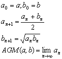

算術幾何平均
程式可以計算兩個正實數的算術幾何平均 (Arithmetic-Geometric Mean)。
程式編寫日期: 2006年7月22日
注意: 輸入程式前請先按 SHIFT AC 確保程式能夠輸入
程式長度: 18步
| Kout 1 | Kin 3 | Kout 2 | Kin + 1 | Kin × 3 |
| 2 | Kin ÷ 1 | Kout 1 | RND | - |
| Kout 3 | √ | RND | Kin 2 | = |
| x2 | x > 0 | Kout 1 | MODE . |
參考公式:

例題: 計算兩數 2及3的算術幾何平均值。
按 2 SHIFT Kin 1 3 SHIFT Kin 2 P1 2 (顯示答案為2.474680436)